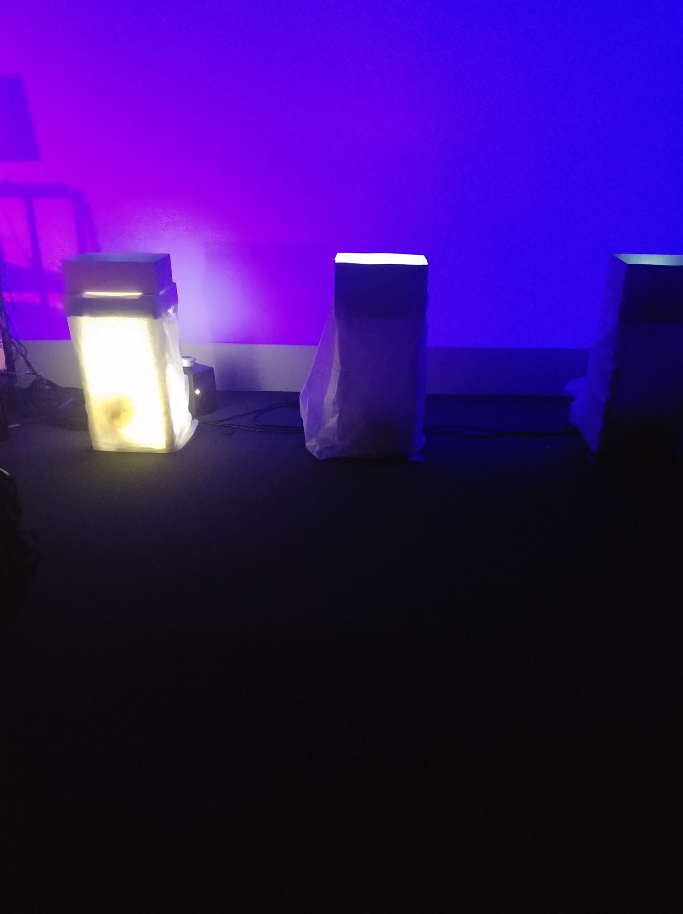

Les Chatoyants
Résumé du projet :
Dans ces temps difficiles, le projet des Chatoyants a pour but de rassembler à distance les gens par son aspect ludique et réconfortant, c'est-à-dire un monde imaginaire et onirique. La présence des chats permet de se distraire des différents éléments stressants de la vie réelle. Notre projet attouche une source de réconfort et un aspect rassurant dans ces temps difficiles par la présence chaleureuse des chats.
Les Chatoyants est une projection d’animations sous le thème de chats s’affichant dans l’une des trois boîtes situées l'une à côté de l'autre et le long du mur du fond de la salle. Tout d'abord, une animation d'un chat projetée sur le mur, où sont situés les boîtes, va aléatoirement choisir parmi laquelle des trois boîtes il entrera. Par la suite, le spectateur sera incité à s'approcher de la boîte par des sons et lumières provenant de la boîte choisie. Aussi, les autres boîtes ne seront pas mises en évidence afin de guider le spectateur vers la boîte choisie. Dans la boîte choisie, une projection d'une animation d'un chat dans une certaine dimension, selon la boîte, sera projetée dans le fond de la dite boîte. Ce même processus se répète plusieurs fois entre les trois différentes boîtes, et ce, de façon aléatoire. Le spectateur sera guidé de la même façon (par la vidéo, la lumière et le son), mais présentera des vidéos d’animations différentes à l’intérieur des boîtes, selon la boîte choisie. Le chat ressort de la boîte lorsque la projection est terminée et choisit de nouveau une boîte dans laquelle il ira, et ce, en cycle. Le principe sera le même en ligne, cependant le spectateur pourra choisir parmi les trois personnes suivantes : Mathis, 9 ans, Jasmine, 19 ans ainsi que Jacques, 46 ans. Selon le point de vue choisi, le spectateur va pouvoir explorer les univers différents, et ce, dans un ordre différent. Selon la personne choisie, la hauteur de la caméra va varier.
Dates de diffusion :
20, 21 et 22 mars 2020, 20h.
Lien pour assister au projet :
experience/index.htmlRéalisé par :
Samuel Cardinal, Catherine Côté, Steaven Rompré et Alexandra Descheneaux
Galerie d'images :

Journal de création
Semaine 1 - 25 au 29 janvier 2021
Nous sommes la journée zéro et nous avons recommencé la production de notre projet.
Cette semaine, nous avons combiné les fichiers de notre github de Les Chatoyants pré-existant avec celui des professeurs. Nous avons aussi débuté la documentation de la préproduction individuellement ainsi que notre journal individuel. Voici des exemples d'accomplissements que nous avons intégré dans nos journaux personnels.
Schéma du fonctionnement d'Arduino

Complétion du journal de la semaine 1 de Samuel

Changement du nom du journal de Steaven

Semaine 2 - 30 janvier au 5 février 2021
Cette semaine, nous avons fait une mise à jour de chacune de nos sections de la préproduction en lien avec les propositions émises par les professeurs lors de la rencontre récurrente du mardi.
Aussi, nous avons eu une discussion sur l'interactivité du projet et comment elle sera mise en place. Nous avons décidé d'offrir un choix au spectateur parmi trois personnages. Selon le personnage choisi, le spectateur aura une expérience différente.
Enfin, pour la semaine qui s'en vient nous avons l'intention de commencer à amasser notre matériel, s'assurer que notre utilisation de notre table artisinale est fonctionnelle et de finaliser la préproduction.
Schéma de branchement modifié (En cours)

Complétion section de Steaven

Semaine 3 - 6 au 12 février 2021
Cette semaine, nous avons finalisé notre préproduction en y apportant les modifications nécessaires pour chaque section.
Nous avons officialisé le concept de fonctionnement en ligne et comment nous allons diffuser l'espace présentiel en ligne.
Enfin, l'équipe a participé à ses comités habituels et à travailler sur ses animations individuelles.
Réalisation d'une des animations

Finalisation section de Steaven

Semaine 4 - 13 au 19 février 2021
Cette semaine, nous avons fait l'installation des éléments de notre projet au grand studio, c'est-à-dire l'installation du projecteur avec l'aide de Cédric et aussi l'installation d'une table et d'une boite d'essai.
Nous avons testé nos nappes afin de voir si la lumière passerait bien à travers celle-ci. Nous avons aussi fait les branchements pour les lumières et un de nos deux projecteurs.
Enfin, nous avons fait un test de projection et nous avons branché celui-ci à Internet. Nous avons noté certaines modifications à faire comme la hauteur et la largeur de la table, rapprocher le projecteur du mur et éloigner la table du mur.
Installation d'une table et d'une boite


Branchement Internet et installation du projecteur


Look temporaire de l'installation

Semaine 5 - 20 au 26 février 2021
Cette semaine, nous avons fait des modifications dans notre installation de notre projet au grand studio, c'est-à-dire l'avancement du gros projecteur et aussi l'installation du petit projecteur.
Nous avons délimité l'emplacement de nos trois tables à l'aide de marqueurs et nous avons placé celles-ci. Nous avons ajouté les nappes sur celles-ci. Nous avons aussi apporter les modifications nécessaires à certains éléments comme l'agrandissement de nos tables et la réduction de la hauteur de nos boites.
Nous avons aussi fait les branchements fonctionnels pour nos trois lumières que nous avons installées sous nos tables.
Aussi, nous avons fait un test pour le son d'ambiance avec deux hauts-parleurs. Enfin, nous avons fait un test de mapping vidéo ainsi qu'un test de qualité de projection de nos animations dans nos boites.
Installation du projecteur au plafond

Installation des lumières et des tables


Test de mapping vidéo

Semaine 6 - 27 février au 5 mars 2021
Cette semaine, nous avons fait des modifications dans notre installation de notre projet au grand studio, c'est-à-dire soigner l'apparence de nos nappes en les collant davantage aux pattes de nos tables. Nous avons fait la liste du matériel.
Enfin, nous avons présenté nos avancements mardi, c'est-à-dire le design de la page web et nos animations. Nous avons surtout travaillé de façon individuelle.
Page du projet web

Installation des tables au grand studio
{kind=link}
Prototype fonctionnel de notre projet
{kind=link}
Semaine 7 - 6 au 12 mars 2021
Cette semaine, nous avons finalisé tous les aspects de notre projet. Nous avons donc finalisé l’apparence de la salle, c’est-à-dire arranger les nappes, l’emplacement final des tables, des lumières, des haut-parleurs, démêler les fils et cacher ceux-ci.
Aussi, nous avons accroché les haut-parleurs d’ambiance au plafond et branché les haut-parleurs au sol. Nous avons aussi fait les branchements finaux dans la salle des matrices pour les haut-parleurs au plafond et ceux situés au sol.
Nous avons finalisé le module de son dans Max. Enfin, les animations finales ont été réalisé.
Vue d'ensemble de l'installation
{kind=link}

Finalisation du module de son dans Max
{kind=link}
Animations finales